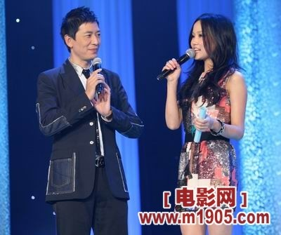
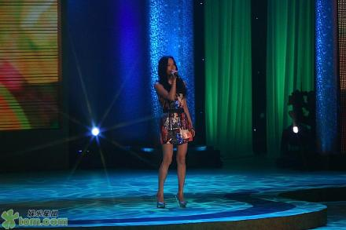

环保理由很简单，因为可以给我们带来更多。做起来也很简单，只是一种思想上的转变。很细微的事情，比如环保袋，比如随后关灯，比如尽可能的爬楼梯又可以健身塑形。注意生活的小细节，我们也可以成为环保先锋。
刚从CCTV举办的“2009环保星锋会”回来，在威海举办，我对海滨城市总有一股莫名的向往，黄昏下吹着海风在海边慢慢散步。不过这一切，是在环境不被污染的情况下才有。
最近由于一直拍音乐剧《弘一法师》，所以很多的工作都被推掉或者延后了，跟这些专业的音乐剧演员在一起，有很大的压力，希望可以有更多的时间去排练，缩小和他们之间的距离。但是这次活动由电影频道节目中心、中华环保联合会主办的“2009环保星锋会”，张信哲、罗家英，刘谦、周笔畅、任泉、孟广美、黄渤、瞿颖、胡彦斌、BOBO等艺人都已确定参加，相信他们比我更加忙，但是为了呼吁大家一起环保和学习环保知识，大家都齐聚一堂，我想我也要参与其中，当天我唱了朱哲琴老师的《丹顶鹤的故事》，很小的时候就听过这首歌，只觉得有芦苇坡有丹顶鹤很美，并不知道其中的意思。原来讲的是一个大学生为了救助丹顶鹤牺牲自己的故事。不过这首歌很后面非常高，我在现场唱的时候胡彦斌做在下面笑我说我脸都抽筋了，我不是抽筋，是很投入，一般唱到忘我的时候表情都比较扭曲一些。罗家英老师特地跑过来表扬我和我合照。主持人戴军哥每次说我是他的骄傲，所以这次表现没有让大家失望，我也安心了。
回到主题，我这次有学习很多环保知识，我的环保心得就是“少用电梯，多爬楼梯”不仅可以节省能源，还是健身塑型，尤其是爱漂亮的女孩子两格两格爬对收紧臀部很有效果，家里有样狗狗的人，下雨天不能带它们出去玩耍，可以带着狗狗一起爬楼梯，对它们也是一种锻炼，狗狗会更加健康，如果它们爬累了你可以抱狗狗继续爬，这样又可以增进感情，所以少用电梯多怕楼梯可以带来那么多好处和快乐，这是我长时间一直在坚持做的一个事情，如果大家有一些很好环抱理念也可以学出来分享，我们来一起学习一起爱护这个世界吧。最后，中华环保联合会在现场还为我颁发了“环保爱心使者”的荣誉证书，也是用环保纸做的。